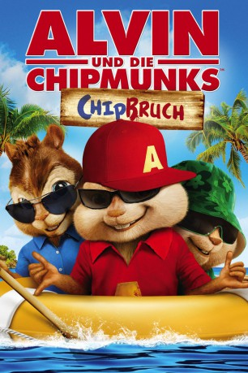

gesehen am 09.04.2016
gesehen am 09.04.2016Alternativ: Alvin and the Chipmunks: Chipwrecked gesehen am 09.04.2016
 
 IMDB-Wertung: 4.4 / 10
IMDB-Wertung: 4.4 / 10  Metascore:
Metascore: 
Alvin, Simon und Theodore machen Urlaub auf einem Luxuskreuzer und verwandeln die Decks in ihren persönlichen Spielplatz. Aber dann: Die Chipmunks erleiden Schiffbruch! Und landen auf einer öden Insel. Während Dave Seville sich nur Gedanken darüber macht, dass sie sich unerlaubt von der Gruppe entfernt haben, hauen die Chipmunks auf den Putz, wie man es von ihnen kennt. Sie singen, tanzen und verbreiten Chaos. Aber sie erleben ihr blaues Wunder, als sie auf einer Abenteuerinsel einem Schiffbrüchigen begegnen, der Alvin und den Chipmunks durchaus gewachsen ist.
Jahr: 2011
Dauer: 87 Minuten
FSK:
Land: USA Studio: 20th Century FoxTonspuren: DTS - ,
Untertitel:
Auflösung: 1080p (1920x1040) Größe: 10854 MB
Genre: Animation/Trick, Abenteuer, Komödie, Familie, Fantasy, Musik
Regisseur: Mike Mitchell
Drehbuch: Jonathan Aibel, Glenn Berger, Ross Bagdasarian, Janice Karman
Soundtrack: Mark Mothersbaugh
Darsteller:
 Jason Lee als Dave
Jason Lee als Dave David Cross als Ian
David Cross als Ian Jenny Slate als Zoe
Jenny Slate als Zoe Justin Long als Alvin
Justin Long als Alvin Matthew Gray Gubler als Simon
Matthew Gray Gubler als Simon Jesse McCartney als Theodore
Jesse McCartney als Theodore Amy Poehler als Eleanor
Amy Poehler als Eleanor Anna Faris als Jeanette
Anna Faris als Jeanette Christina Applegate als Brittany
Christina Applegate als Brittany Alan Tudyk als Simone
Alan Tudyk als Simone Michael P. Northey als Hawaiian Shirt Guy
Michael P. Northey als Hawaiian Shirt Guy Andy Buckley als Captain Correlli
Andy Buckley als Captain Correlli Chad Krowchuk als Waiter
Chad Krowchuk als Waiter Nelson Wong als Casino Guy
Nelson Wong als Casino Guy Phyllis Smith als Flight Attendant
Phyllis Smith als Flight Attendant Jeremy Palko als Cruise Guy , uncredited
Jeremy Palko als Cruise Guy , uncreditedDatei: X:\Kinder Collections\Alvin und die Chipmunks\Alvin und die Chipmunks 3 - Chipbruch (2011, FSK, 1920x1040).mkv seit 12.03.2015
Festplatte: Kinder-Filme+Trick
 Es gibt insgesamt 7 Filme in der Gruppe 'Kinder Collections\Alvin und die Chipmunks'
Es gibt insgesamt 7 Filme in der Gruppe 'Kinder Collections\Alvin und die Chipmunks'